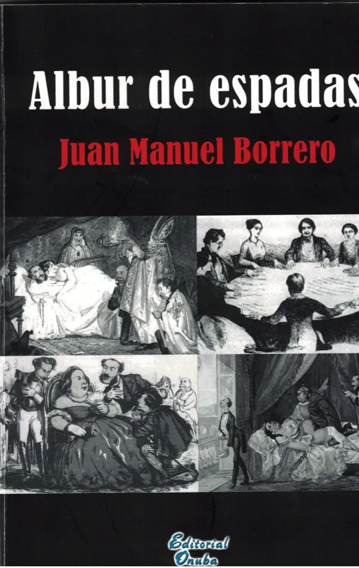

Escritor · Catedrático de Matemáticas
Juan Manuel
Borrero González
Una voz singular dentro de la literatura andaluza contemporánea, entre el orden matemático y la imaginación.

Un físico que escribe
Juan Manuel Borrero González es un escritor español nacido en El Cerro del Andévalo (Huelva) en 1947. Licenciado en Física y Catedrático de Matemáticas, ha desarrollado una destacada trayectoria literaria que lo sitúa entre los autores andaluces más prolíficos, cultivando el relato, la novela, el ensayo y el artículo periodístico.
 I – II · Ciencias y letras
I – II · Ciencias y letrasBiografía
De los Relatos heterodoxos a 1989, el año del Premio Andalucía de Novela con La luna blanca de Chesed.
Leer → III · Reconocimientos
III · ReconocimientosPremios
Ganador del Premio Andalucía de Novela y finalista del Planeta, el Azorín y el Ateneo de Sevilla.
Leer →
IV – VI · Narrativa y ensayoObra
Novelas, relatos, ensayo, columnas de prensa y la bibliografía completa.
Leer → VII · EnseñanzaDocencia
Institutos, UNED, IAAP y la alcaldía de El Cerro del Andévalo, con documentación acreditativa.
Leer → NotasFuentes
Ediciones, ISBN, hemeroteca y estudios universitarios sobre su obra.
Leer →Preguntas frecuentes
¿Quién es Juan Manuel Borrero González?
Juan Manuel Borrero González es un escritor español nacido en El Cerro del Andévalo (Huelva) en 1947. Licenciado en Física por la Universidad de Sevilla y catedrático de Matemáticas, ha cultivado la novela, el relato, el ensayo y el artículo periodístico, y es considerado una voz singular de la literatura andaluza contemporánea. Más información →
¿Qué premios literarios ha recibido?
Ganó el IV Premio Andalucía de Novela (1989) con La luna blanca de Chesed, el II Premio Nacional de Relatos Ciudad de Algeciras (1989) con La del alba sería y el III Premio Internacional de Relatos «Canaleta» (2001) con Su nombre era nadie. Fue finalista del Premio Planeta (1990 y 1993), del Premio Azorín (1992) y del Premio Ateneo de Sevilla (1991 y 1994). Más información →
¿Cuál es su obra más conocida?
La luna blanca de Chesed (Espasa Calpe, colección Nueva Austral), novela ambientada en la baja Edad Media que combina la cábala, el pensamiento pitagórico y diversas corrientes místicas en una trama de misterio. La crítica destacó cómo relaciona el orden matemático y la magia. Más información →
¿Qué libros ha publicado?
Entre otros: Relatos heterodoxos (1988), La del alba sería (1989), La luna blanca de Chesed (1989), Su nombre era nadie (2001), En las riberas del Aqueronte (2015), Los manuscritos de la lechuza (2018), Aproximación al hombre mágico (2019), Letra capitular (2019), Imposturas (2019), Albur de espadas (2020) y De profetas y herejes (2021), además de libros didácticos de matemáticas. Más información →
¿Qué seudónimos ha utilizado?
En varios certámenes literarios se presentó con los seudónimos Juan de la Trinidad y Xavier Suquet. Más información →
¿Cuál ha sido su trayectoria profesional?
Catedrático de Matemáticas desde 1984, fue profesor tutor de la UNED en Algeciras (1974-1985) y director del IB «José Cadalso» de San Roque, del Instituto de Bachillerato a Distancia de Sevilla y del Instituto Provincial de Formación de Adultos de Sevilla. Entre 2007 y 2011 fue alcalde de El Cerro del Andévalo. Más información →